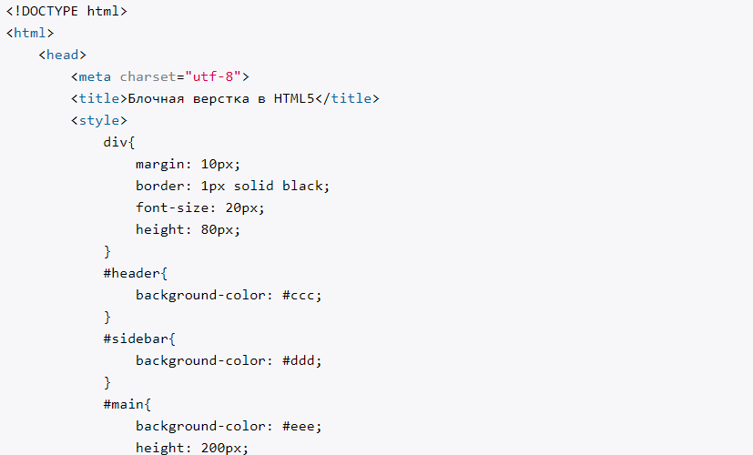
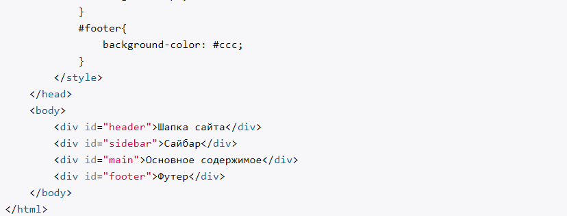
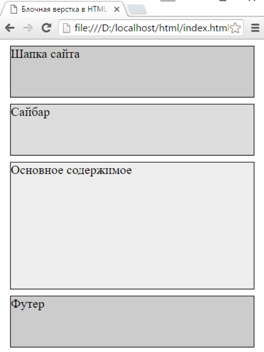
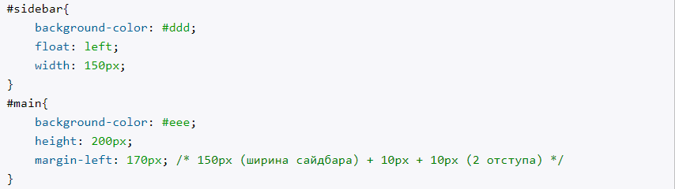
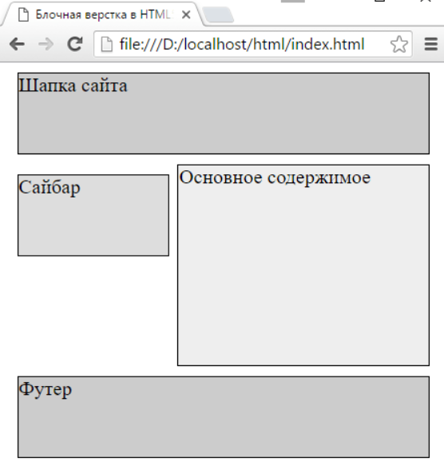
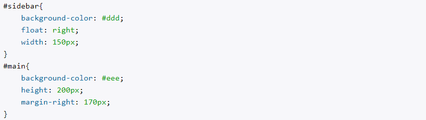

Лабораторна робота №1
Лабораторна робота №2
Лабораторна робота №3
Лабораторна робота №4
Лабораторна робота №5
Лабораторна робота №6
Лабораторна робота №7
Лабораторна робота №8
Лабораторна робота №9
Лабораторна робота №3
БЛОЧНА ВЕРСТКА
ТЕОРІЯ:
Переваги верстки блоками:
- Невелика кількість коду, що знижує "вагу" сайту
- Завантаження швидше, ніж у таблиць
- Можна створювати сайти різної складності
Недоліки табличної верстки:
- З зменшенням розширення, блоки спадають або накладаються
- Проблематична кросбраузерність
- Верстка блоками складніша, ніж таблицями
Блочна верстка - це відносно умовна назва способів та прийомів верстки, коли в більшості веб-сторінок для розмітки використовується CSS-властивість float, а основним "будівничим" елементом веб-сторінки є елемент div, тобто блок.
Використовуючи властивість float та елементи div та інші, можна створити структуру сторінки з декількох стовпців, як при табличній верстці, яка буде значно гнучкішою.
Нехай розмістимо блоки один під одним, для цього напишемо код:


Змінивши параметри main та sidebar, отримаємо змінену структуру:


Ствоерння правого сайдбара аналогічне: для сайдбару запишем float: right, а в блок основного змісту - відступ справа:

